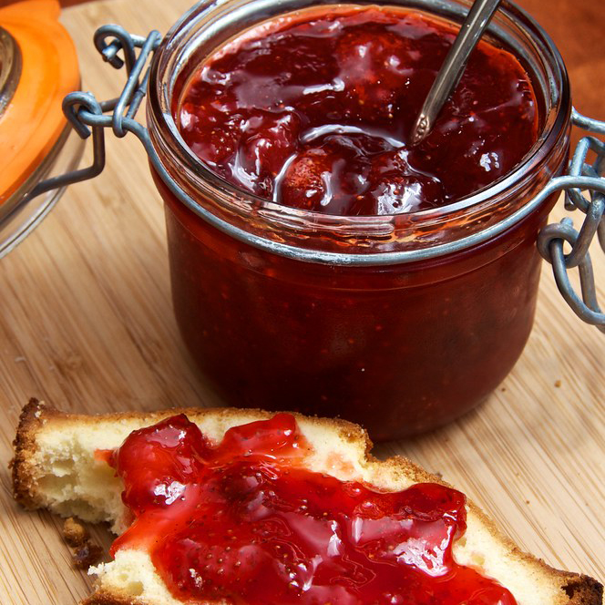
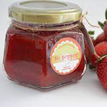
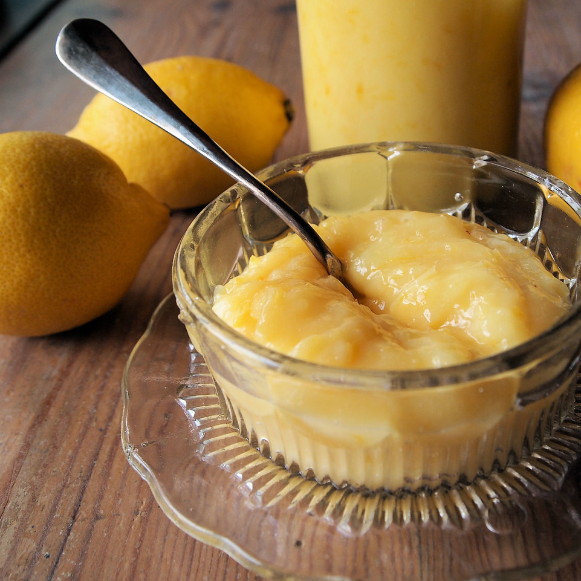
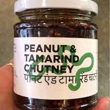
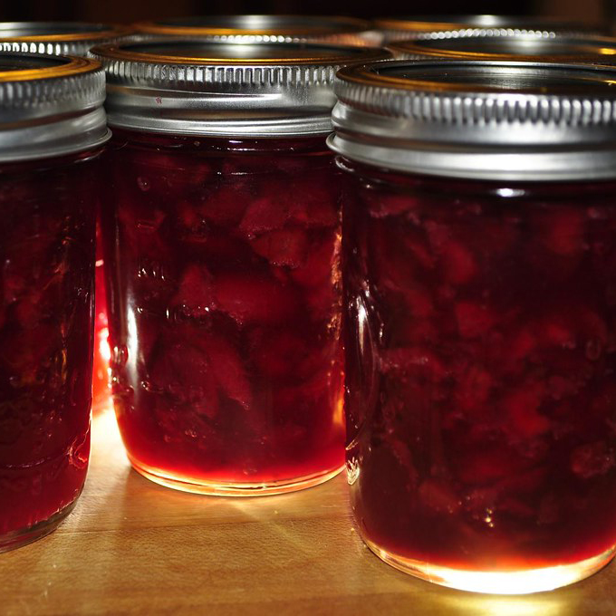
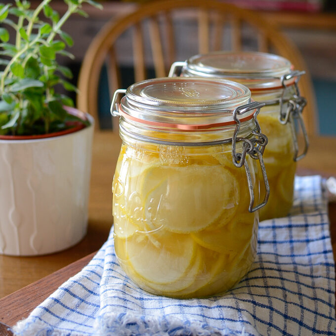

Skip to Main Content
About
Preserves
Grammar
Desserts
Fruit Preservation Techniques
I referenced the website below for some of information.
JamMaking
Click on the different pictures to find out more about the differences of fruit preserving methods.

Jam
×
Jam is made up of chopped fruit and sugar.

Jelly
×
Jelly is similar to jam, but made with fruit juice and sugar.

Curd
×
Curd is a thicker consistency than jams and are made with sugar, butter, eggs, fruit juice, and zest of a citrus fruit.

Chutney
×
Chutney is a mixture of fruit, vegetables, sugar, vinegar, and spice.

Preserves
×
Although very similar to a jam, a preserve uses bigger chunks or whole pieces of fruit.

Cheong
×
Cheong is a Korean preservation method that creates a syrup like consistency by suspending fruit in sugar or honey.